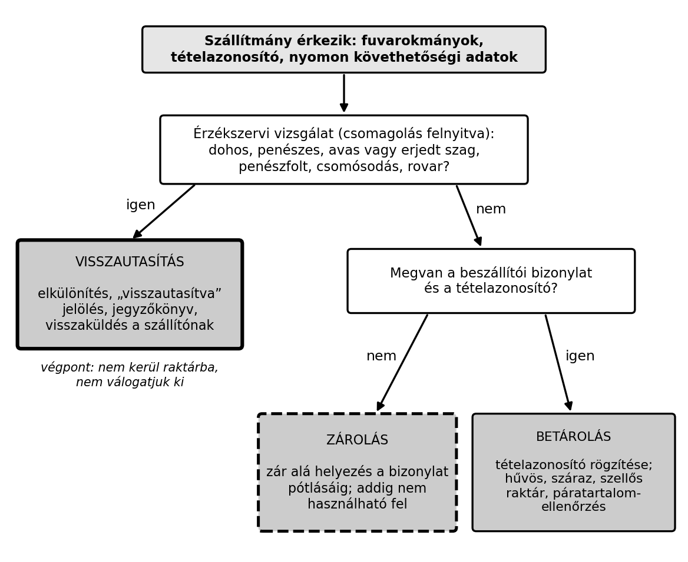
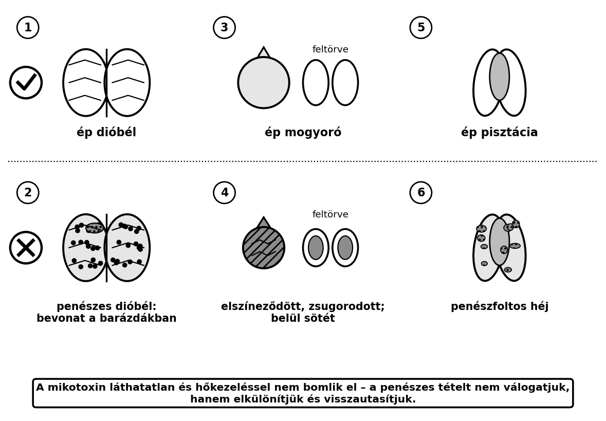
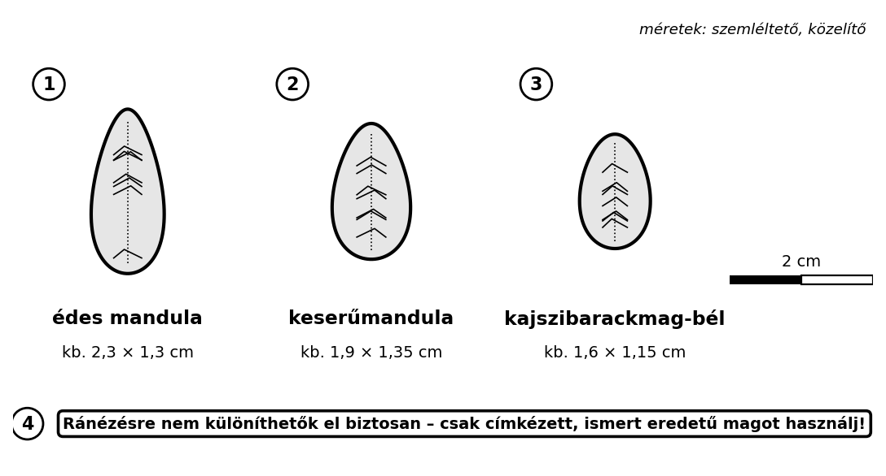

A penészfoltos mogyoró, a dohos szagú diótétel, a keserűmandulás díszítés vagy a tortadísznek használt kerti virág a cukrászüzemben nem csak minőségi hiba: egyes esetekben komoly mérgezés kockázatát hordozza. A vendég azt feltételezi, hogy minden, ami a süteményre kerül, biztonságos. A cukrásznak ezért már az alapanyag átvételekor és a díszítőanyagok kiválasztásakor ismernie kell a biológiai eredetű méreganyagokat, és a gyanús tételt félre kell tennie.
A következő döntési fa azt mutatja, milyen gyorsan el kell dőlnie egy olajosmag-szállítmány sorsának, ha penészgyanús.

A döntési fában a gyanús tétel útja a visszautasításnál véget ér: elkülönítjük, „visszautasítva” jelöléssel látjuk el, jegyzőkönyvezzük és visszaküldjük, nem kerül raktárba. Ha a tétel érzékszervileg rendben van, de hiányzik a beszállítói bizonylat vagy a tételazonosító, a tételt a pótlásig zároljuk; csak a bizonylattal rendelkező, kifogástalan tétel kerül a hűvös, száraz, szellős raktárba.
A folyamat lényege: ha a tétel gyanús, nem az a kérdés, hogy „mennyire penészes”, hanem az, hogy a tételt egyáltalán szabad-e használni. A penészgomba által termelt méreganyagok ugyanis láthatatlanok, szagtalanok, hőállók, és a látható penészfoltok nem mutatják meg, meddig terjed a szennyezettség.
Definíció. A biológiai eredetű méreganyag a könyvben olyan élőlények által termelt, az emberre káros vegyület, amely az élelmiszer-alapanyagban, az élelmiszerben vagy a díszítőanyagban jelenhet meg. Ide tartoznak a penészgombák toxinjai (mikotoxinok), a baktériumok által termelt biogén aminok (elsősorban a hisztamin), a növények saját védőanyagai (például a keserűmandula amigdalinja vagy a zöld burgonya szolaninja), a mérgező gombák toxinjai, valamint egyes állati eredetű toxinok.
Definíció. A mikotoxin penészgombák által képzett, kis mennyiségben is mérgező, hőstabil vegyület. A mikotoxin nem mikroba, hanem a penész anyagcsereterméke. Ezért a penészgombák hőkezeléssel való elpusztítása nem jelenti a toxin lebontását: a sütés, pörkölés, főzés gyakran alig vagy egyáltalán nem csökkenti a mikotoxin-tartalmat.
Definíció. A hisztamin a halakban és más élelmiszerekben természetesen meglévő hisztidin aminosav átalakulásával keletkező biogén amin. A cukrászati gyakorlatban ritkán, de a vendéglátóüzemben előforduló tonhalas, makrélás, szardíniás készítményeknél van jelentősége. Hasonlóan hőstabil; a sütés vagy főzés nem semmisíti meg a már kialakult hisztamint.
Megjegyzés. A biológiai eredetű méreganyagokat meg kell különböztetni az ételmérgezést okozó élő kórokozóktól (például szalmonella) és a kémiai szennyezőktől (például tisztítószer-maradvány). Itt a mérgező anyag maga van jelen, nem a szaporodó mikroba. A gyakorlatban a penészes áru kiselejtezése, a hűtési lánc fenntartása és az ellenőrzött alapanyag-beszerzés a legfontosabb megelőzés.
A cukrászüzemben leggyakrabban az alábbi mikotoxinokkal kell számolni: aflatoxinok, ochratoxin A, patulin és Fusarium-toxinok. A fő kockázatot az olajos magvak, a szárított gyümölcsök, a fűszerek, a gabonaalapú alapanyagok és az almalé, almás töltelék jelentik.
| Mikotoxin | Tipikus forrás a cukrászatban | Kockázat, megjegyzés | Gyakorlati teendő |
|---|---|---|---|
| Aflatoxin B1, B2, G1, G2 | földimogyoró, pisztácia, mandula, dió, mogyoró, füge | májkárosító, nagyobb dózisban akut mérgezés; a sütés nem bontja le | penészes, dohos, avas tételt visszautasítani; hűvös, száraz tárolás |
| Ochratoxin A | gabonák, kávé, mazsola, szárított szőlő | vesekárosító, hőstabil | tárolási nedvesség kerülése; szárított gyümölcsök ellenőrzése |
| Patulin | penészes alma, almalé, gyümölcslé, almás töltelék | sejtkárosító; savas gyümölcskészítményben viszonylag hőstabil, a főzés/pasztőrözés csak részben csökkenti (ellenőrizendő: szakirodalom) | csak ép, nem rothadt, nem penészes almát használni; a rothadt részek kivágása nem elég; gyümölcslé beszállítói bizonylat |
| Fusarium-toxinok (pl. DON, zearalenon) | gabona, liszt, sütőipari termékek alapanyaga | immun- és hormonrendszeri hatás (ellenőrizendő) | lisztet szárazon, hűvösen tárolni; beszállítói specifikáció |
Higiénia. A mikotoxin-szennyezettség legtöbbször a helytelen tárolásból ered: a meleg, nedves, szellőzetlen raktár kedvez a penészgombák növekedésének. A szennyezett tétel gyakran nem láthatóan penészes, de dohos, keserű, avas szaga lehet.
Szabály. A penészgyanús olajos magvat, szárított gyümölcsöt, fűszert nem szabad „kiválogatni” és a maradékot felhasználni, mert a mikotoxinok eloszlása egyenetlen lehet. A gyakorlatban a szag, a penészfolt vagy a csomósodás már visszautasítási ok.

A sematikus rajz felső sorában ép magok, az alsóban penészgyanús párjaik láthatók: a penészes dióbélen a barázdákban ül a bevonat (2), a penészgyanús mogyoró elszíneződött, összezsugorodott, és feltörve belül is sötét (4), a pisztácia héján penészfoltok vannak (6). A mikotoxin maga nem látszik: a látható penész csak a gyanú jele, ezért az ilyen tételt nem válogatjuk ki, hanem elkülönítjük és visszautasítjuk.
Továbbvitt eredmény. Az itt tanult átvételi szempontokat az Olajos magvak, gesztenye és mák; zöldségek és gombák alfejezet használja tovább: a mandula, a dió, a mogyoró, a pisztácia és a marcipán, nugát alapanyagok beszerzésekor ugyanezt a penész- és toxinellenőrzést kell elvégezni.
Az olajos magvak átvételekor a vizsgálatot az érzékszervi tulajdonságokkal kezdjük. A friss, jó minőségű mogyoró, mandula, dió enyhén édeskés, pörkölt mag esetén magolajos illatú. Dohos, penészes, keserű, avas vagy savanyú szag esetén a tétel nem használható fel.
Az átvételi ellenőrzés lépései:
Jogszabály. Az élelmiszerekben előforduló szennyező anyagok, köztük a mikotoxinok határértékeit uniós rendelet és a Magyar Élelmiszerkönyv előírásai tartalmazzák. A vendéglátóipari felhasználásra szánt olajos magvaknál a beszállítónak igazolnia kell, hogy a termék megfelel a hatályos előírásoknak; a konkrét határértékeket mindig az aktuális szennyezőanyag-rendeletből kell leolvasni (ellenőrizendő: hatályos uniós és hazai határértékek).
A hisztamin-mérgezés a vendéglátásban jellemzően a nem kellően hűtött, nagy hisztidintartalmú tengeri halakhoz kötődik: tonhal, makréla, szardínia, hering (ellenőrizendő: halfajlista). A halakban a baktériumos szennyeződés révén a hisztidin hisztaminná alakul. A kialakult hisztamin hőstabil, ezért a rosszul hűtött hal utólagos sütése, főzése nem teszi biztonságossá.
A tünetek kipirulás, fejfájás, hányinger, hasmenés, szívritmuszavar lehetnek. A hisztamin mérgezési kockázata a cukrászati termékeknél ritka, de az üzemben dolgozó cukrásznak ismernie kell, ha például tonhalas szendvicset, hideg büféfalatot vagy salátát készít.
A tengeri biotoxinok közül a kagylómérgezések (paralitikus, diarrhoeás, neurotoxikus) emelhetők ki. A kagylók olyan algákat szűrhetnek ki, amelyek idegrendszeri vagy emésztőszervi toxinokat termelnek. Ezek a toxinok is hőstabilak lehetnek. A cukrászati nyersanyagoknál e toxinok nem jellemzőek, de a vendéglátó konyhában a kagyló, osztriga, tengeri herkentyűk beszerzésekor csak engedéllyel rendelkező, ellenőrzött forrásból szabad dolgozni (ellenőrizendő: hatósági előírás).
Szabály. A hisztamin-kockázat megelőzése a beszerzési forrás és a hűtési lánc ellenőrzése. A felengedett halat nem szabad szobahőmérsékleten hagyni, és a fagyasztott halat nem szabad lassan, nem hűtött környezetben kiolvasztani.
Egyes növények saját, természetes védőanyaguk miatt nem ehetők, vagy csak feldolgozva, kis mennyiségben használhatók.
Keserűmandula (amigdalin). A keserűmandula és a barackmag, cseresznyemag, szilvamag belseje amigdalint tartalmaz. Az amigdalin az emésztőrendszerben és a feldolgozás során ciánhidrogént szabadíthat fel. Nagyobb mennyiségben nyersen fogyasztva súlyos, akár halálos mérgezést okozhat. A cukrászati gyakorlatban a keserűmandula ezért csak ellenőrzött, aromaként, erősen korlátozott mennyiségben, hőkezelt vagy kivonat formában használható (ellenőrizendő: hatályos felhasználási korlát). A marcipánhoz édes mandulát kell használni; a keserűmandulás aroma nem pótolja a hőkezelést.

A rajz azt mutatja, mennyire hasonlít egymásra a három mag: a keserűmandula jellemzően rövidebb és szélesebb az édes mandulánál, a kajszibarackmag bele kisebb és kerekdedebb, de az eltérés tételenként változik, ezért ránézésre nem különíthetők el biztosan. A biztos megkülönböztetést a címkézett, ismert eredetű csomagolás adja.
Szolanin (zöld burgonya). A zöldre színeződött, kicsírázott burgonya héjában és csíráiban szolanin halmozódik fel. A szolanin hőstabil, főzve sem bomlik le teljesen. A cukrászati sós tésztákhoz, burgonyás pástétomokhoz csak ép, nem zöld, nem csírás burgonyát szabad felhasználni. A zöld részeket kivágni nem elég, mert a toxin átterjedhet a gumó húsára.
Mérgező dísznövények. A tortákra, desszertekre helyezett kerti virág gyakran dísznövény, nem ehető. Ilyen például a gyöngyvirág, a leander, a tiszafa, a ricinus, a nadragulya. Már kis mennyiség is súlyos mérgezést okozhat. Tilos. A dísznövény levelét, virágát, termését vagy bogyóját élelmiszerre helyezni. Ha a díszítéshez virágot használunk, kizárólag dokumentáltan ehető virágot (például árvácska, rózsaszirom, levendula) vásároljunk élelmiszer-minőségben, és ezt is jelöljük, ha nem egyértelmű, hogy a vendég élelmiszerként ismeri fel (ellenőrizendő: ehető virágok jelölési és forgalmazási szabályai).
A növényi toxinokat a táblázatban foglaltuk össze:
| Növényi toxin/forrás | Tünet lehetősége | Cukrászati megelőzés |
|---|---|---|
| Keserűmandula, barackmag (amigdalin) | cianidmérgezés, légzési nehézség | csak hőkezelt, aromaként, korlátozottan; édes mandulát használj |
| Zöld, csíros burgonya (szolanin) | hányinger, hasi fájdalom | csak ép, nem zöld, nem csírás burgonyát használj |
| Gyöngyvirág, leander, tiszafa, ricinus | súlyos mérgezés, szív- és idegrendszeri tünetek | kerti dísznövényt tilos tortára tenni; csak ellenőrzött ehető virág |
A vadon termő gombák mérgezése a legismertebb természetes toxinkockázat. A gyilkos galóca vagy a fehér gyilkos galóca toxinja (amatoxin) hőstabil, főzés után is halálos lehet. A cukrászati konyhában – például sós pitéhez, gombás töltelékhez – kizárólag termesztett, ellenőrzött gombát (csiperke, laskagomba) szabad használni. A vendéglátó egység vadon termő gombát csak a hatósági előírások szerint, szakellenőr vizsgálata után forgalmazhat (ellenőrizendő: hatályos magyar gombaforgalmazási szabály). A cukrász tanuló ne gyűjtsön maga gombát az üzembe, és ne használjon fel házi gombát.
Mérgező állatok a cukrászati gyakorlatban gyakorlatilag nem fordulnak elő. A tengeri halak, kagylók, puhatestűek vásárlásakor azonban ellenőrzött forrásból kell dolgozni, mert a tengeri biotoxinok és a hisztamin kockázata ott jelentkezhet. Édesvízi, mérgező halfajok a hazai vendéglátásban nem jellemzőek (ellenőrizendő: halfaj-szabályozás).
Példa 1 – aflatoxin határérték szemléltetően.
Adott: egy földimogyoró-szállítmány tömege
.
A beszállítói specifikáció szerint a legnagyobb megengedett aflatoxin
B1-koncentráció
(ellenőrizendő: hatályos határérték).
Keresett: mekkora az a legnagyobb aflatoxin-tömeg, amely ebben a
tételben a határérték szerint még megengedhető?
Képlet:
Behelyettesítés:
Ellenőrzés: , tehát . Ez a teljes 12 kg-os tételre vonatkozik, és csak szemléltető számítás; a tényleges határértéket a hatályos szennyezőanyag-rendeletből kell venni.
Példa 2 – hisztamin mennyiség egy adagban.
Adott: egy tonhalas vendéglátó tételben a megengedett
hisztamin-koncentráció
(ellenőrizendő). Egy adag hal tömege
,
a mért hisztamin-koncentráció
.
Keresett: mennyi hisztamint tartalmaz az adag?
Képlet:
Behelyettesítés:
Ha a mért koncentráció lenne, a hisztamin-tömeg . Ez koncentrációban meghaladná a határt. A számítás arra tanít, hogy a határérték koncentrációra vonatkozik, nem az adag tömegére; a sütés, főzés nem mentesít, mert a hisztamin hőstabil.
Az átvett olajos magvaknál, szárított gyümölcsöknél és fűszereknél az érzékszervi vizsgálat a következőkre terjed ki:
A minőségellenőrzés nem laboratóriumi vizsgálat, de a gyanús tétel kizárásához elegendő. Ha a későbbiekben panasz vagy hatósági ellenőrzés következik, a visszautasítás tényét dokumentálni kell.
Hiba 1 – penészes mogyoró kiválogatása. Tünet: a
mogyorótétel egy részén penészfoltok láthatók, a dolgozó kiszedi a
penészes szemeket, a többit felhasználja.
Ok: a mikotoxin a látható penészen túl is jelen lehet, a hőkezelés nem
bontja le.
Megelőzés: az egész érintett tételt el kell különíteni, visszautasítani;
a kiválogatás nem élelmiszerbiztonsági megoldás.
Hiba 2 – keserűmandula nyersen a marcipánban. Tünet:
a tanuló a marcipán készítésekor keserűmandulát reszel bele, hogy
„karakteresebb legyen”.
Ok: az amigdalin ciánhidrogént szabadíthat fel; nyersen, nagyobb
mennyiségben mérgező.
Megelőzés: csak hőkezelt, aromaként, ellenőrzött mennyiségben
használható; marcipánhoz édes mandulát használjunk.
Hiba 3 – kerti virág a tortán. Tünet: a torta
tetején gyöngyvirág vagy leander virága díszeleg, mert szép.
Ok: a dísznövények mérgező komponenseket tartalmazhatnak.
Megelőzés: kizárólag élelmiszer-forrásból származó, ehető virágot
használj, és ha nem egyértelmű, jelöld.
Hiba 4 – hisztaminos hal kiolvasztása
szobahőmérsékleten. Tünet: a tonhalfilét konyhapulton hagyják
felengedni, majd megsütik.
Ok: a szobahőmérsékleten szaporodó baktériumok hisztamint termelnek; a
sütés nem semmisíti meg.
Megelőzés: fagyasztott halat hűtőben kell kiolvasztani, és a hűtési
láncot végig tartani.
Egy cukrászüzemben hétvégi esküvői torta rendelésre készülnek. A beszállító 10 kg darált mandulát hoz, a csomagoláson nincs tételazonosító, a fuvarlevél hiányos. Az átvevő cukrász kinyitja a zsákot, és enyhe dohos, kesernyés szagot érez. A mandula színe egyenetlen, néhány darab csomós, poros.
A cukrász döntése: a tételt nem használja fel, félre teszi, megjelöli „visszautasítva, penészgyanú”, és kitölti az átvételi jegyzőkönyvet. A beszállítót értesíti, a tételt visszaküldi. Az esküvői tortához másik, ellenőrzött beszállítótól rendel 8 kg mandulát, amelynek érzékszervi tulajdonságai megfelelők, és dokumentuma is van.
A tanulság: a penészgyanús tétel visszautasítása nem túlzott óvatosság, hanem a mikotoxin-kockázat kezelése. A mogyoró, mandula, dió dohos szaga már gyanú; a toxin jelenléte laborvizsgálat nélkül nem kizárható, ezért a tételt vissza kell utasítani.
1. feladat (A)
Definiáld röviden a mikotoxint és a hisztamint, és mondd meg, miért hőstabilak a gyakorlatban.
2. feladat (A)
Egy 8 kg-os mogyorótételben a mért aflatoxin B1-koncentráció . Mennyi a tétel teljes aflatoxin-tartalma? Fejezd ki µg-ban és mg-ban.
3. feladat (B)
Egy 25 kg-os mazsola-tételben a beszállítói specifikáció legfeljebb ochratoxin A-t enged (a beszállítói specifikáció lehet szigorúbb a jogszabályi határértéknél; a hatályos határérték aszalt szőlőre ellenőrizendő: (EU) 2023/915 és módosításai). A mintavétel átlagos koncentrációja . Mennyivel lépi túl a koncentráció a határt? Mennyi a tétel teljes ochratoxin A-tartalma a mért érték szerint?
4. feladat (B)
Csoportosítsd táblázatban a következő toxinokat: aflatoxin, patulin, hisztamin, amigdalin, szolanin. Add meg mindegyikre, hogy milyen forrásból származik, és mi a fő cukrászati kockázat.
5. feladat (C)
Egy cukrász a kertjéből gyöngyvirágot tesz a dísztortára, mert szerinte „szép és természetes”. Elemezd a hibát, és javasolj biztonságos megoldást.
6. feladat (D – gyakorlat)
Készíts egy ellenőrző listát olajos magvak átvételéhez. A lista tartalmazza az érzékszervi, dokumentációs és tárolási szempontokat. Ezután döntsd el egy adott esetben: 15 kg dió érkezik, a szaga enyhén avas, a csomagolás ép, a bizonylat hiányzik. Átvennéd-e? Indokold.
Önellenőrzés – válaszok
1. feladat megoldása
A mikotoxin penészgombák által termelt, kis mennyiségben is mérgező, hőstabil anyagcsere-termék. A hisztamin a hisztidin aminosav átalakulásával keletkező biogén amin, jellemzően rosszul hűtött tengeri halakban. Mindkettő azért hőstabil, mert kémiai szerkezetük nem bomlik le a sütési hőmérsékleten; a mikroba elpusztulhat, a toxin visszamarad.
2. feladat megoldása
Adott:
,
.
Képlet:
.
Behelyettesítés:
.
Átváltás:
.
Ellenőrzés: az eredmény kisebb, mint 1 mg, ami reális egy 8 kg-os
tételnél.
3. feladat megoldása
Határtúllépés:
.
Teljes ochratoxin A-tartalom:
.
A tétel tehát nem felel meg a specifikációnak, visszautasítandó.
4. feladat megoldása
| Toxin | Forrás | Fő cukrászati kockázat |
|---|---|---|
| Aflatoxin | penészes olajos magvak, füge | májkárosító, dohos tétel |
| Patulin | penészes alma, almalé | almás töltelék szennyezettsége |
| Hisztamin | rosszul hűtött tengeri hal | hőstabil, sütés nem véd |
| Amigdalin | keserűmandula, barackmag | cianidmérgezés |
| Szolanin | zöld, csírás burgonya | hőstabil, sós tészták kockázata |
5. feladat megoldása
A gyöngyvirág mérgező dísznövény. Már kis mennyiség is szív- és idegrendszeri tüneteket okozhat, ezért élelmiszerre helyezni tilos. Biztonságos megoldás: ellenőrzött, ehető virágot (például árvácska, levendula) vásárolni élelmiszer-forrásból, vagy cukormasszából készült virágdíszt használni.
6. feladat megoldása
Ellenőrző lista:
1. Csomagolás ép, zárt.
2. Tételazonosító, gyártó, minőségmegőrzési idő olvasható.
3. Szag friss, nem dohos, penészes, avas.
4. Szín egyenletes, penész- és rovarfolt nélkül.
5. Állag száraz, morzsalékos, nem csomós.
6. Beszállítói bizonylat, nyomon követhetőségi adat.
7. Tárolás: száraz, hűvös, szellős helyen, a nedvességtől védve.
Döntés: a 15 kg dió avas szagú, ezért nem vehető át, akkor sem, ha a csomagolás ép. A hiányzó bizonylat miatt a tétel kizárt. A biztonságos gyakorlat a visszautasítás, megjelölés és dokumentálás.
A biológiai eredetű méreganyagok közül a cukrászatban a penészgombák toxinjai, azaz a mikotoxinok a legfontosabbak. Aflatoxin (mogyoró, pisztácia, mandula, füge), ochratoxin A (gabona, mazsola, kávé) és patulin (alma; savas közegben viszonylag hőstabil) hőstabil, sütéssel nem vagy csak részben bontható le, ezért a penészes, dohos, avas tételt egészben vissza kell utasítani. Az olajos magvakat száraz, hűvös, szellős helyen kell tárolni. A hisztamin a rosszul hűtött tengeri halak biogén aminja; hőstabil, a sütés nem semmisíti meg. A keserűmandula amigdalint, a zöld burgonya szolanint tartalmaz; nyersen, illetve zöld részekkel nem használhatók. Dísznövényt tilos tortadíszként alkalmazni; ehető virág csak ellenőrzött forrásból. A vadon termő gombák vendéglátásban csak szakellenőrzés után használhatók (ellenőrizendő). Az itt tanult átvételi és tárolási elveket az Olajos magvak, gesztenye és mák; zöldségek és gombák alfejezet viszi tovább.
A leckében használt jogszabályi, határérték- és technológiai adatok a következő forrástípusokból származnak, és kiadás előtt ellenőrizendők: a hatályos uniós szennyezőanyag-rendelet a mikotoxin-határértékekre; a Magyar Élelmiszerkönyv vonatkozó előírásai; a NÉBIH jó higiéniai gyakorlat útmutatói a vendéglátó üzemekre; a gombaforgalmazási és vadon termőgombaszabály; az ehető virágok forgalmazására és jelölésére vonatkozó előírások; az aktuális hisztamin- és biotoxin-határértékek; gyártói adatlapok az olajos magvak tárolási körülményeire. A szövegben az aflatoxin, ochratoxin, patulin és hisztamin konkrét határértékei, a tárolási hőmérséklet és páratartalom, valamint a keserűmandula felhasználási korlátja tanulási példaként szerepel, ezért ezeket a kiadás előtt a hatályos előírásokkal egyeztetni kell.